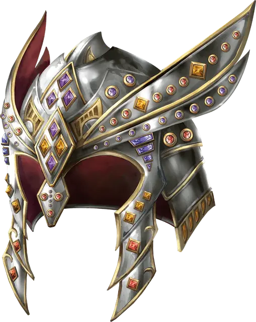

Шлем блеска
Helm of Brilliance
Чудесный предмет, очень редкий (требуется настройка)

Рекомендованная стоимость 40 000 ЗМ
Этот шлем украшен драгоценными камнями: на нём находится 1к10 алмазов, 2к10 рубинов, 3к10 огненных опалов и 4к10 опалов. Любой самоцвет, будучи снят с шлема, превращается в пыль. Когда все самоцветы сняты или уничтожены, шлем теряет свою магию.
Пока вы носите шлем, вы получаете следующие преимущества.
Свет алмазов. Пока на шлеме находится хотя бы один алмаз, он излучает Эманацию радиусом 30 футов. Когда в этой Эманации находится хотя бы одна Нежить, она наполнена Тусклым светом. Любая Нежить, начинающее свой ход в этой Эманации, получает 1к6 урона Излучением.
Пламя огненных опалов. Пока на шлеме находится хотя бы один огненный опал, вы можете действие Магия заставить одно оружие, которое вы держите, вспыхнуть пламенем. Это пламя излучает Яркий свет в радиусе 10 футов и Тусклый свет ещё на 10 футов. Пламя безопасно для вас и для оружия. Когда вы попадаете по цели атакой таким пылающим оружием, цель получает 1к6 дополнительного урона Огнём. Пламя горит до тех пор, пока вы не погасите его Бонусным действием или пока не бросите оружие или не уберёте его.
Сопротивление рубина. Пока на шлеме находится хотя бы один рубин, вы обладаете Сопротивлением урону Огнём.
Заклинания. Вы можете сотворить одно из следующих заклинаний (Сл спасброска 18), используя снятый с шлема драгоценный камней указанного типа в качестве компонента: Дневной свет (опал), Огненный шар (огненный опал), Радужные брызги (алмаз) или Огненная стена (рубин). При сотворении заклинания такой камень разрушается и исчезает с шлема.
Получение урона Огнём. Если вы носите шлем и получаете урон Огнём из-за провала спасброска против заклинания, бросьте 1к20. Если выпадет «1», шлем излучает лучи света из оставшихся на нём самоцветов и уничтожается. Каждое существо висходящей от вас Эманации радиусом 60 футов должно преуспеть в спасброске Ловкости Сл 17, иначе будет поражено лучом и получит урон Излучением, равный количеству камней в шлеме.